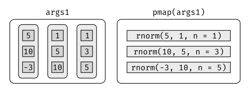
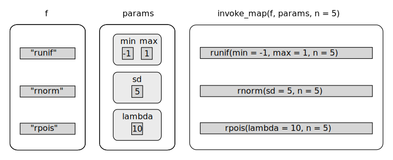

21 Iteración
21.1 Introducción
En funciones, hablamos sobre la importancia de reducir la duplicación en el código creando funciones, en lugar de copiar y pegar. Reducir la duplicación de código tiene tres beneficios principales:
Es más fácil ver el objetivo de tu código; lo diferente llama más atención a la vista que aquello que permanece igual.
Es más sencillo responder a cambios en los requerimientos. A medida que tus necesidades cambian, solo necesitarás realizar cambios en un lugar, en vez de recordar cambiar en cada lugar donde copiaste y pegaste el código.
Es probable que tengas menos errores porque cada línea de código es utilizada en más lugares.
Una herramienta para reducir la duplicación de código son las funciones, que reducen dicha duplicación al identificar patrones repetidos de código y extraerlos en piezas independientes que pueden reutilizarse y actualizarse fácilmente. Otra herramienta para reducir la duplicación es la iteración, que te ayuda cuando necesitas hacer la misma tarea con múltiples entradas: repetir la misma operación en diferentes columnas o en diferentes conjuntos de datos. En este capítulo aprenderás sobre dos paradigmas de iteración importantes: la programación imperativa y la programación funcional. Por el lado imperativo, tienes herramientas como for loops y while loops, que son un gran lugar para comenzar porque hacen que la iteración sea muy explícita, por lo que es obvio qué está pasando. Sin embargo, los bucles for son bastante detallados y requieren bastante código que se duplica para cada bucle. La programación funcional (PF) ofrece herramientas para extraer este código duplicado, por lo que cada patrón común de bucle obtiene su propia función. Una vez que domines el vocabulario de PF, podrás resolver muchos problemas comunes de iteración con menos código, mayor facilidad y menos errores.
21.1.1 Prerrequisitos
Una vez que hayas dominado los bucles for proporcionados por R base, aprenderás algunas de las potentes herramientas de programación proporcionadas por purrr, uno de los paquetes principales de tidyverse.
21.2 Bucles for
Imagina que tenemos este simple tibble:
Queremos calcular la mediana de cada columna. Podrías hacerlo copiando y pegando el siguiente código:
median(df$a)
#> [1] -0.246
median(df$b)
#> [1] -0.287
median(df$c)
#> [1] -0.0567
median(df$d)
#> [1] 0.144Pero eso rompe nuestra regla de oro: nunca copiar y pegar más de dos veces. En cambio, podríamos usar un bucle for:
output <- vector("double", ncol(df)) # 1. output
for (i in seq_along(df)) { # 2. secuencia
output[[i]] <- median(df[[i]]) # 3. cuerpo
}
output
#> [1] -0.2458 -0.2873 -0.0567 0.1443Cada bucle tiene tres componentes:
output:
output <- vector("double", length(x)). Antes de comenzar el bucle, siempre debes asignar suficiente espacio para la salida. Esto es muy importante para la eficiencia: si aumentas el bucle for en cada iteración usando, por ejemplo,c (), el bucle for será muy lento.Una forma general de crear un vector vacío de longitud dada es la función
vector(). Tiene dos argumentos: el tipo de vector (“logical”, “integer”, “double”, “character”, etc) y su longitud.La secuencia:
i in seq_along (df). Este código determina sobre qué iterar: cada ejecución del bucle for asignará aiun valor diferente deseq_along (df). Es útil pensar enicomo un pronombre, como “eso”.Es posible que no hayas visto
seq_along ()con anterioridad. Es una versión segura de la más familiar1:length(l), con una diferencia importante: si se tiene un vector de longitud cero,seq_along ()hace lo correcto:Probablemente no vas a crear un vector de longitud cero deliberadamente, pero es fácil crearlos accidentalmente. Si usamos
1: length (x)en lugar deseq_along (x), es posible que obtengamos un mensaje de error confuso.El cuerpo:
output[[i]] <- median(df[[i]]). Este es el código que hace el trabajo. Se ejecuta repetidamente, con un valor diferente paraicada vez. La primera iteración ejecutaráoutput[[1]] <- median(df[[1]]), la segunda ejecutaráoutput [[2]] <- median (df [[2]]), y así sucesivamente.
¡Eso es todo lo que hay para el bucle for! Ahora es un buen momento para practicar creando algunos bucles for básicos (y no tan básicos) usando los ejercicios que se encuentran a continuación. Luego avanzaremos en algunas variaciones de este bucle que te ayudarán a resolver otros problemas que surgirán en la práctica.
21.2.1 Ejercicios
Escribe bucles for para:
- Calcular la media de cada columna en
datos::mtautos. - Determinar el tipo de cada columna en
datos::vuelos. - Calcular el número de valores únicos en cada columna de
datos::flores. - Generar diez normales aleatorias de distribuciones con medias -10, 0, 10 y 100.
Piensa en el resultado, la secuencia y el cuerpo antes de empezar a escribir el bucle.
- Calcular la media de cada columna en
Elimina el bucle for en cada uno de los siguientes ejemplos aprovechando alguna función existente que trabaje con vectores:
out <- "" for (x in letters) { out <- stringr::str_c(out, x) } x <- sample(100) sd <- 0 for (i in seq_along(x)) { sd <- sd + (x[i] - mean(x)) ^ 2 } sd <- sqrt(sd / (length(x) - 1)) x <- runif(100) out <- vector("numeric", length(x)) out[1] <- x[1] for (i in 2:length(x)) { out[i] <- out[i - 1] + x[i] }Combina tus habilidades para escribir funciones y bucles for:
Escribe un bucle for que imprima (
prints()) la letra de la canción de niños “Cinco ranitas verdes” (u otra).Convierte la canción infantil “Cinco monitos saltaban en la cama” en una función. Generalizar a cualquier cantidad de monitos en cualquier estructura para dormir.
Convierte la canción “99 botellas de cerveza en la pared” en una función. Generalizar a cualquier cantidad, de cualquier tipo de recipiente que contenga cualquier líquido sobre cualquier superficie.
Es común ver bucles for que no preasignan el output y en su lugar aumentan la longitud de un vector en cada paso:
output <- vector("integer", 0) for (i in seq_along(x)) { output <- c(output, lengths(x[[i]])) } output¿Cómo afecta esto el rendimiento? Diseña y ejecuta un experimento.
21.3 Variaciones de bucles for
Una vez que tienes el bucle for básico en tu haber, hay algunas variaciones que debes tener en cuenta. Estas variaciones son importantes independientemente de cómo hagas la iteración, así que no te olvides de ellas una vez que hayas dominado las técnicas de programación funcional (PF) que aprenderás en la próxima sección.
Hay cuatro variaciones del bucle for básico:
- Modificar un objeto existente, en lugar de crear un nuevo objeto.
- Iterar sobre nombres o valores, en lugar de índices.
- Manejar outputs de longitud desconocida.
- Manejar secuencias de longitud desconocida.
21.3.1 Modificar un objeto existente
Algunas veces querrás usar un bucle for para modificar un objeto existente. Por ejemplo, recuerda el desafío que teníamos en el capítulo sobre funciones. Queríamos reescalar cada columna en un data frame:
df <- tibble(
a = rnorm(10),
b = rnorm(10),
c = rnorm(10),
d = rnorm(10)
)
rescale01 <- function(x) {
rng <- range(x, na.rm = TRUE)
(x - rng[1]) / (rng[2] - rng[1])
}
df$a <- rescale01(df$a)
df$b <- rescale01(df$b)
df$c <- rescale01(df$c)
df$d <- rescale01(df$d)Para resolver esto con un bucle for, volvamos a pensar en los tres componentes:
Output: ya tenemos el output — ¡es lo mismo que la entrada!
Secuencia: podemos pensar en un data frame como una lista de columnas, por lo que podemos iterar sobre cada columna con
seq_along (df).Cuerpo: aplicar
rescale01 ().
Esto nos da:
Por lo general, se modificará una lista o un data frame con este tipo de bucle, así que recuerda utilizar [[ y no [. Te habrás fijado que usamos [[ en todos nuestros bucles for: creemos que es mejor usar [[ incluso para vectores atómicos porque deja en claro que queremos trabajar con un solo elemento.
21.3.2 Patrones de bucle
Hay tres formas básicas de hacer un bucle sobre un vector. Hasta ahora hemos visto la más general: iterar sobre los índices numéricos con for (i in seq_along (xs)), y extraer el valor con x [[i]]. Hay otras dos formas:
Iterar sobre los elementos:
for (x in xs). Esta forma es la más útil si solo te preocupas por los efectos secundarios, como graficar o grabar un archivo, porque es difícil almacenar el output de forma eficiente.Iterar sobre los nombres:
for (nm in names(xs)). Esto te entrega el nombre, que se puede usar para acceder al valor conx [[nm]]. Esto es útil si queremos utilizar el nombre en el título de un gráfico o en el nombre de un archivo. Si estás creando un output con nombre, asegúrate de nombrar el vector de resultados de esta manera:Iterar sobre los índices numéricos es la forma más general, porque dada la posición se puede extraer tanto el nombre como el valor:
21.3.3 Longitud de output desconocida
Es posible que algunas veces no sepas el tamaño que tendrá el output. Por ejemplo, imagina que quieres simular algunos vectores aleatorios de longitudes aleatorias. Podrías tener la tentación de resolver este problema haciendo crecer el vector progresivamente:
medias <- c(0, 1, 2)
output <- double()
for (i in seq_along(medias)) {
n <- sample(100, 1)
output <- c(output, rnorm(n, medias[[i]]))
}
str(output)
#> num [1:138] 0.912 0.205 2.584 -0.789 0.588 ...Pero esto no es muy eficiente porque en cada iteración, R tiene que copiar todos los datos de las iteraciones anteriores. En términos técnicos, obtienes un comportamiento “cuadrático” (\(O(n^2)\)), lo que significa que un bucle que tiene tres veces más elementos tomaría nueve (\(3^2\)) veces más tiempo en ejecutarse.
Una mejor solución es guardar los resultados en una lista y luego combinarlos en un solo vector una vez que se complete el ciclo:
out <- vector("list", length(medias))
for (i in seq_along(medias)) {
n <- sample(100, 1)
out[[i]] <- rnorm(n, medias[[i]])
}
str(out)
#> List of 3
#> $ : num [1:76] -0.3389 -0.0756 0.0402 0.1243 -0.9984 ...
#> $ : num [1:17] -0.11 1.149 0.614 0.77 1.392 ...
#> $ : num [1:41] 1.88 2.46 2.62 1.82 1.88 ...
str(unlist(out))
#> num [1:134] -0.3389 -0.0756 0.0402 0.1243 -0.9984 ...Aquí usamos unlist () (deslistar en inglés) para aplanar una lista de vectores en un solo vector. Una opción más estricta es usar purrr :: flatten_dbl () (aplanar dobles) — arrojará un error si el input no es una lista de dobles.
Este patrón ocurre también en otros lugares:
Podrías estar generando una cadena larga. En lugar de pegar (
paste ()) cada iteración con la anterior, guarda el output en un vector de caracteres y luego combina ese vector en una cadena conpaste(output, collapse = "").Podrías estar generando un data frame grande. En lugar de enlazar (
rbind ()) secuencialmente en cada iteración, guarda el resultado en una lista y luego utilizadplyr::bind_rows(output)para combinar el output en un solo data frame.
Cuidado con este patrón. Cuando lo veas, cambia a un objeto de resultado más complejo y luego combínalo en un solo paso al final.
21.3.4 Longitud de secuencia desconocida
A veces ni siquiera sabemos cuánto tiene que durar la secuencia de entrada. Esto es común cuando se hacen simulaciones. Por ejemplo, es posible que se quiera realizar un bucle hasta que se obtengan tres caras seguidas. No podemos hacer ese tipo de iteración con un bucle for. En su lugar, podemos utilizar un bucle while (mientras, en inglés). Un bucle while es más simple que un bucle for porque solo tiene dos componentes, una condición y un cuerpo:
Un bucle while también es más general que un bucle for, porque podemos reescribir este último como un bucle while, pero no podemos reescribir todos los bucles while bucles for:
for (i in seq_along(x)) {
# cuerpo
}
# Equivalente a
i <- 1
while (i <= length(x)) {
# cuerpo
i <- i + 1
}Así es como podríamos usar un bucle while para encontrar cuántos intentos se necesitan para obtener tres caras seguidas:
lanzamiento <- function() sample(c("S", "C"), 1)
lanzamientos <- 0
ncaras <- 0
while (ncaras < 3) {
if (lanzamiento() == "C") {
ncaras <- ncaras + 1
} else {
ncaras <- 0
}
lanzamientos <- lanzamientos + 1
}
lanzamientos
#> [1] 21Mencionamos los bucles while brevemente, porque casi nunca los usamos. Se utilizan con mayor frecuencia para hacer simulaciones, un tema que está fuera del alcance de este libro. Sin embargo, es bueno saber que existen en caso que nos encontremos con problemas en los que el número de iteraciones no se conoce de antemano.
21.3.5 Ejercicios
Imagina que tienes un directorio lleno de archivos CSV que quieres importar. Tienes sus ubicaciones en un vector,
files <- dir("data/", pattern = "\\.csv$", full.names = TRUE), y ahora quieres leer cada uno conread_csv(). Escribe un bucle for que los cargue en un solo data frame.¿Qué pasa si utilizamos
for (nm in names(x))yxno tiene nombres (names)? ¿Qué pasa si solo algunos elementos están nombrados? ¿Qué pasa si los nombres no son únicos?Escribe una función que imprima el promedio de cada columna numérica en un data frame, junto con su nombre. Por ejemplo,
mostrar_promedio(flores)debe imprimir:mostrar_promedio(flores) #> Largo.Sepalo: 5.84 #> Ancho.Sepalo: 3.06 #> Largo.Petalo: 3.76 #> Ancho.Petalo: 1.20(Desafío adicional: ¿qué función utilizamos para asegurarnos que los números queden alineados a pesar que los nombres de las variables tienen diferentes longitudes?)
¿Qué hace este código? ¿Cómo funciona?
21.4 Bucles for vs. funcionales
Los bucles for no son tan importantes en R como en otros lenguajes porque R es un lenguaje de programación funcional. Esto significa que es posible envolver los bucles en una función y llamar a esa función en lugar de usar el bucle for directamente.
Para ver por qué esto es importante, consideremos (nuevamente) este data frame simple:
Imagina que quieres calcular la media de cada columna. Podríamos hacer eso con un bucle for:
output <- vector("double", length(df))
for (i in seq_along(df)) {
output[[i]] <- mean(df[[i]])
}
output
#> [1] -0.326 0.136 0.429 -0.250Como te das cuenta que vas querer calcular los promedios de cada columna con bastante frecuencia, extraer el bucle en una función:
col_media <- function(df) {
output <- vector("double", length(df))
for (i in seq_along(df)) {
output[i] <- mean(df[[i]])
}
output
}Pero entonces pensamos que también sería útil poder calcular la mediana y la desviación estándar, así que copiamos y pegamos la función col_media () y reemplazamos mean () con median () y sd ():
col_mediana <- function(df) {
output <- vector("double", length(df))
for (i in seq_along(df)) {
output[i] <- median(df[[i]])
}
output
}
col_desvest <- function(df) {
output <- vector("double", length(df))
for (i in seq_along(df)) {
output[i] <- sd(df[[i]])
}
output
}¡Oh oh! Copiaste y pegaste este código dos veces, por lo que es hora de pensar cómo generalizarlo. Ten en cuenta que la mayoría de este código corresponde al texto trillado del bucle for, lo que hace difícil ver la única cosa que es diferente entre las funciones (mean (), median (), sd ()).
¿Qué podŕias hacer si ves un conjunto de funciones como esta?:
f1 <- function(x) abs(x - mean(x)) ^ 1
f2 <- function(x) abs(x - mean(x)) ^ 2
f3 <- function(x) abs(x - mean(x)) ^ 3Por suerte, habrás notado que hay mucha duplicación que puedes extraer con un argumento adicional:
Redujiste la posibilidad de errores (porque ahora tienes 1/3 menos de código) y hiciste más fácil generalizar para situaciones nuevas.
Podemos hacer exactamente lo mismo con col_media (), col_mediana () y col_desvest () agregando un argumento que proporciona la función a aplicar en cada columna:
col_resumen <- function(df, fun) {
out <- vector("double", length(df))
for (i in seq_along(df)) {
out[i] <- fun(df[[i]])
}
out
}
col_resumen(df, median)
#> [1] -0.5185 0.0278 0.1730 -0.6116
col_resumen(df, mean)
#> [1] -0.326 0.136 0.429 -0.250La idea de pasar una función a otra es extremadamente poderosa y es uno de los comportamientos que hacen de R un lenguaje de programación funcional. Puede que te tome un tiempo comprender la idea, pero vale la pena el esfuerzo. En el resto del capítulo aprenderás y usarás el paquete purrr, que proporciona funciones que eliminan la necesidad de muchos de los bucles comunes. La familia de funciones de R base apply (aplicar: apply (), lapply (), tapply (), etc.) resuelve un problema similar; sin embargo, purrr es más consistente y, por lo tanto, es más fácil de aprender.
El objetivo de usar las funciones de purrr en lugar de los bucles es que te permite dividir los desafíos comunes de manipulación de listas en partes independientes:
¿Cómo puedes resolver el problema para un solo elemento de la lista? Una vez que encuentres la solución, purrr se encargará de generalizarla a cada elemento de la lista.
Si estás resolviendo un problema complejo, ¿cómo puedes dividirlo en pequeñas etapas que te permitan avanzar paso a paso hacia la solución? Con purrr obtienes muchas piezas pequeñas que puedes ensamblar utilizando el pipe (
%>%).
Esta estructura facilita la resolución de nuevos problemas. También hace que sea más fácil entender las soluciones a problemas antiguos cuando relees código que escribiste en el pasado.
21.4.1 Ejercicios
Lee la documentación para
apply (). En el caso 2d, ¿qué dos bucles for generaliza?Adapta
col_resumen()para que solo se aplique a las columnas numéricas. Podrías querer comenzar con la funciónis_numeric ()que devuelve un vector lógico que tenga un TRUE por cada columna numérica.
21.5 Las funciones map
El patrón de iterar sobre un vector, hacer algo con cada elemento y guardar los resultados es tan común que el paquete purrr proporciona una familia de funciones que lo hacen por ti. Hay una función para cada tipo de output:
map ()crea una lista.map_lgl ()crea un vector lógico.map_int ()crea un vector de enteros.map_dbl ()crea un vector de dobles.map_chr ()crea un vector de caracteres.
Cada función map (mapa, en español) toma un vector como input, aplica una función a cada elemento y luego devuelve un nuevo vector que tiene la misma longitud (y los mismos nombres) que el input. El tipo de vector está determinado por el sufijo de la función map.
Una vez que domines estas funciones, descubrirás que lleva mucho menos tiempo resolver los problemas de iteración. Sin embargo, nunca debes sentirse mal por usar un bucle for en lugar de una función map. Las funciones map son un nivel superior de abstracción y puede llevar mucho tiempo entender cómo funcionan. Lo importante es que resuelvas el problema en el que estás trabajando, no que escribas el código más conciso y elegante (¡aunque eso es definitivamente algo a lo que aspirar!).
Algunas personas te dirán que evites los bucles for porque son lentos. ¡Están equivocados! (Bueno, al menos están bastante desactualizados, ya que los bucles for han dejado de ser lentos desde hace muchos años). Los principales beneficios de usar funciones como map () no es la velocidad, sino la claridad: hacen que tu código sea más fácil de escribir y leer.
Podemos usar estas funciones para realizar los mismos cálculos que el último bucle for. Esas funciones de resumen devolvían valores decimales, por lo que necesitamos usar map_dbl ():
map_dbl(df, mean)
#> a b c d
#> -0.326 0.136 0.429 -0.250
map_dbl(df, median)
#> a b c d
#> -0.5185 0.0278 0.1730 -0.6116
map_dbl(df, sd)
#> a b c d
#> 0.921 0.485 0.982 1.156Comparado con el uso de un bucle for, el foco está en la operación que se está realizando (es decir, mean (), median (), sd ()), y no en llevar la cuenta de las acciones requeridas para recorrer cada elemento y almacenar el output. Esto es aún más evidente si usamos el pipe:
df %>% map_dbl(mean)
#> a b c d
#> -0.326 0.136 0.429 -0.250
df %>% map_dbl(median)
#> a b c d
#> -0.5185 0.0278 0.1730 -0.6116
df %>% map_dbl(sd)
#> a b c d
#> 0.921 0.485 0.982 1.156Existen algunas diferencias entre map _ * () y col_resumen():
Todas las funciones de purrr están implementadas en C. Esto las hace más rápidas a expensas de la legibilidad.
El segundo argumento,
.f, la función a aplicar, puede ser una fórmula, un vector de caracteres o un vector de enteros. Aprenderás acerca de estos atajos útiles en la siguiente sección.map_*()usa … ([dot dot dot] - punto punto punto) para pasar los argumentos adicionales a.fcada vez que se llama:Las funciones map también preservan los nombres:
21.5.1 Atajos
Existen algunos atajos que puedes usar con .f para ahorrar algo de tipeo Imagina que quieres ajustar un modelo lineal a cada grupo en un conjunto de datos. El siguiente ejemplo de juguete divide el dataset mtautos en tres partes (una para cada valor de cilindro) y ajusta el mismo modelo lineal a cada parte:
La sintaxis para crear una función anónima en R es bastante verbosa, por lo que purrr provee un atajo conveniente: una fórmula unilateral.
Hemos usado . como pronombre: se refiere al elemento actual de la lista (del mismo modo que i se refiere al índice actual en el loop for).
Cuando examinas múltiples modelos, puedes querer extraer un estadístico resumen como lo es \(R^2\). Para hacer eso primero necesitas correr summary() y luego extraer la componente r.squared (R-cuadrado). Podríamos hacerlo usando un atajo para las funciones anónimas:
Sin embargo, extraer componentes con nombres es una operación común, por lo que purrr provee un atajo aún más corto: puedes usar una cadena de caracteres (o string).
También puedes usar un entero para seleccionar elementos de acuerdo a su posición:
21.5.2 R Base
Si la familia de funciones apply en R base te son familiares, podrás haber notado algunas similitudes con las funciones de purrr:
lapply()es básicamente idéntica amap(), excepto quemap()es consistente con todas las otras funciones de purrr y puedes usar atajos para.f.sapply()es un envoltorio (wrapper) delapply()que automáticamente simplifica el output. Esto es úti lpara el trabajo interactivo pero es problemático en una función, ya que nunca sabrás qué tipo de output vas a obtener:x1 <- list( c(0.27, 0.37, 0.57, 0.91, 0.20), c(0.90, 0.94, 0.66, 0.63, 0.06), c(0.21, 0.18, 0.69, 0.38, 0.77) ) x2 <- list( c(0.50, 0.72, 0.99, 0.38, 0.78), c(0.93, 0.21, 0.65, 0.13, 0.27), c(0.39, 0.01, 0.38, 0.87, 0.34) ) umbral <- function(x, cutoff = 0.8) x[x > cutoff] x1 %>% sapply(umbral) %>% str() #> List of 3 #> $ : num 0.91 #> $ : num [1:2] 0.9 0.94 #> $ : num(0) x2 %>% sapply(umbral) %>% str() #> num [1:3] 0.99 0.93 0.87vapply()es una alternativa más segura asapply()porque debes ingresar un argumento adicional que define el tipo de output. El único problema convapply()es es que requiere mucha escritura:vapply(df, is.numeric, logical(1))es equivalente amap_lgl(df, is.numeric). Una ventaja devapply()sobre las funciones map de purrr es que también puede generar matrices — las funciones map solo generan vectores.
Aquí nos enfocamos en las funciones de purrr, ya que proveen nombres y argumentos consistentes, atajos útiles y en el futuro proveerán paralelización simple y barras de progreso.
21.5.3 Ejercicios
Escribe un código que use una de las funciones de map para:
- Calcular la media de cada columna en
datos::mautos. - Obtener de qué tipo es cada columna en
datos::vuelos. - Calcular la cantidad de valores únicos en cada columna de
datos::flores. - Generar diez normales aleatorias de distribuciones con medias -10, 0, 10 y 100.
- Calcular la media de cada columna en
¿Cómo puedes crear un vector tal que para cada columna en un data frame indique si corresponde o no a un factor?
¿Qué ocurre si usas las funciones map en vectores que no son listas? ¿Qué hace
map(1:5, runif)? ¿Por qué?¿Qué hace
map(-2:2, rnorm, n = 5)? ¿Por qué? ¿Qué hacemap_dbl(-2:2, rnorm, n = 5)? ¿Por qué?Reescribe
map(x, function(df) lm(mpg ~ wt, data = df))para eliminar todas las funciones anónimas.
21.6 Manejando los errores
Cuando usas las funciones map para repetir muchas operaciones, la probabilidad de que una de estas falle es mucho más alta. Cuando esto ocurre, obtendrás un mensaje de error y no una salida. Esto es molesto: ¿por qué un error evita que accedas a todo lo que sí funcionó? ¿Cómo puedes asegurarte de que una manzana podrida no arruine todo el barril?
En esta sección aprenderás a manejar estas situaciones con una nueva función: safely() (de forma segura, en inglés). safely() es un adverbio: toma una función (un verbo) y entrega una versión modificada. En este caso, la función modificada nunca lanzará un error. En cambio, siempre devolverá una lista de dos elementos:
resultes el resultado original. Si hubo un error, aparecerá comoNULL,errores un objeto de error. Si la operación fue exitosa, seráNULL.
(Puede que estés familiarizado con la función try() (intentar) de R base. Es similar, pero dado que a veces entrega el resultado original y a veces un objeto de error, es más díficil para trabajar.)
Veamos esto con un ejemplo simple: log():
log_seguro <- safely(log)
str(log_seguro(10))
#> List of 2
#> $ result: num 2.3
#> $ error : NULL
str(log_seguro("a"))
#> List of 2
#> $ result: NULL
#> $ error :List of 2
#> ..$ message: chr "non-numeric argument to mathematical function"
#> ..$ call : language .Primitive("log")(x, base)
#> ..- attr(*, "class")= chr [1:3] "simpleError" "error" "condition"Cuando la función es exitosa, el elemento result contiene el resultado y el elemento error es NULL. Cuando la función falla, el elemento result es NULL y el elemento error contiene un objeto de error.
safely() está diseñada para funcionar con map:
x <- list(1, 10, "a")
y <- x %>% map(safely(log))
str(y)
#> List of 3
#> $ :List of 2
#> ..$ result: num 0
#> ..$ error : NULL
#> $ :List of 2
#> ..$ result: num 2.3
#> ..$ error : NULL
#> $ :List of 2
#> ..$ result: NULL
#> ..$ error :List of 2
#> .. ..$ message: chr "non-numeric argument to mathematical function"
#> .. ..$ call : language .Primitive("log")(x, base)
#> .. ..- attr(*, "class")= chr [1:3] "simpleError" "error" "condition"Esto sería más fácil de trabajar si tuvieramos dos listas: una con todos los errores y otra con todas las salidas, Esto es fácil de obtener con purrr::transpose() (transponer):
y <- y %>% transpose()
str(y)
#> List of 2
#> $ result:List of 3
#> ..$ : num 0
#> ..$ : num 2.3
#> ..$ : NULL
#> $ error :List of 3
#> ..$ : NULL
#> ..$ : NULL
#> ..$ :List of 2
#> .. ..$ message: chr "non-numeric argument to mathematical function"
#> .. ..$ call : language .Primitive("log")(x, base)
#> .. ..- attr(*, "class")= chr [1:3] "simpleError" "error" "condition"Queda a tu criterio cómo manejar los errores, pero típicamente puedes mirar los valores de x donde y es un error, o trabajar con los valores que y que están ok:
estan_ok <- y$error %>% map_lgl(is_null)
x[!estan_ok]
#> [[1]]
#> [1] "a"
y$result[estan_ok] %>% flatten_dbl()
#> [1] 0.0 2.3Purrr provee otros dos adverbios útiles:
Al igual que
safely(),possibly()(posiblemente) siempre tendrá éxito. Es más simple quesafely(), ya que le das un valor por defecto para devolver cuando haya un error.quietly()(silenciosamente) tiene un rol similar asafely(), pero en lugar de capturar los errores, captura el output impreso, los mensajes y las advertencias:
21.7 Usar map sobre múltiples argumentos
Hasta ahora hemos “mapeado” sobre un único input. Pero a menudo tienes multiples inputs relacionados y necesitas iterar sobre ellos en paralelo. Ese es el trabajo de las funciones map2() y pmap(). Por ejemplo, imagina que quieres simular normales aleatorias con distintas medias. Ya sabes hacerlo con map():
mu <- list(5, 10, -3)
mu %>%
map(rnorm, n = 5) %>%
str()
#> List of 3
#> $ : num [1:5] 5.63 7.1 4.39 3.37 4.99
#> $ : num [1:5] 9.34 9.33 9.52 11.32 10.64
#> $ : num [1:5] -2.49 -4.75 -2.11 -2.78 -2.42¿Qué ocurre si también necesitas cambiar la desviación estándar? Una forma de hacerlo sería iterar sobre los índices e indexar en vectores de medias y desviaciones estándar:
sigma <- list(1, 5, 10)
seq_along(mu) %>%
map(~rnorm(5, mu[[.]], sigma[[.]])) %>%
str()
#> List of 3
#> $ : num [1:5] 4.82 5.74 4 2.06 5.72
#> $ : num [1:5] 6.51 0.529 10.381 14.377 12.269
#> $ : num [1:5] -11.51 2.66 8.52 -10.56 -7.89Pero esto oscurece la intención del código. En su lugar podríamos usar map2(), que itera sobre dos vectores en paralelo:
map2(mu, sigma, rnorm, n = 5) %>% str()
#> List of 3
#> $ : num [1:5] 3.83 4.52 5.12 3.23 3.59
#> $ : num [1:5] 13.55 3.8 8.16 12.31 8.39
#> $ : num [1:5] -15.872 -13.3 12.141 0.469 14.794map2() genera esta serie de llamadas a funciones:

Observa que los argumentos que varían para cada llamada van antes de la función; argumentos que son los mismos para cada llamada van después.
Al igual que map(), map2() es un envoltorio en torno a un bucle for:
map2 <- function(x, y, f, ...) {
out <- vector("list", length(x))
for (i in seq_along(x)) {
out[[i]] <- f(x[[i]], y[[i]], ...)
}
out
}También te podrás imaginar map3(), map4(), map5(), map6(), etc., pero eso se volvería tedioso rápidamente. En cambio, purrr provee pmap(), que toma una lista de argumentos. Puedes usar eso si quieres cambiar la media, desviación estándar y el número de muestras:
n <- list(1, 3, 5)
args1 <- list(n, mu, sigma)
args1 %>%
pmap(rnorm) %>%
str()
#> List of 3
#> $ : num 5.39
#> $ : num [1:3] 5.41 2.08 9.58
#> $ : num [1:5] -23.85 -2.96 -6.56 8.46 -5.21Esto se ve así:

Si no nombras todos los elementos de la lista, pmap() usará una coincidencia posicional al llamar la función. Esto es un poco frágil y hace el código más difícil de leer, por lo que es mejor nombrar los argumentos:
Esto genera llamadas más largas, pero más seguras:

Dado que los argumentos son todos del mismo largo, tiene sentido almacenarlos en un data frame:
params <- tribble(
~mean, ~sd, ~n,
5, 1, 1,
10, 5, 3,
-3, 10, 5
)
params %>%
pmap(rnorm)
#> [[1]]
#> [1] 6.02
#>
#> [[2]]
#> [1] 8.68 18.29 6.13
#>
#> [[3]]
#> [1] -12.24 -5.76 -8.93 -4.22 8.80Utilizar un data frame cuando tu código se vuelve complicado nos parece una buena aproximación, ya que asegura que cada columna tenga nombre y el mismo largo que las demás columnas.
21.7.1 Invocando distintas funciones
Existe un paso adicional en términos de complejidad. Así como cambias los argumentos de la función también puedes cambiar la función misma:
f <- c("runif", "rnorm", "rpois")
param <- list(
list(min = -1, max = 1),
list(sd = 5),
list(lambda = 10)
)Para manejar este caso, puedes usar invoke_map():
invoke_map(f, param, n = 5) %>% str()
#> List of 3
#> $ : num [1:5] 0.479 0.439 -0.471 0.348 -0.581
#> $ : num [1:5] 2.48 3.9 7.54 -9.12 3.94
#> $ : int [1:5] 6 11 5 8 9
El primer argumento es una lista de funciones o un vector de caracteres con nombres de funciones. El segundo argumento es una lista de listas que indica los argumentos que cambian en cada función. Los argumentos subsecuentes pasan a cada función.
Nuevamente, puedes usar tribble() para hacer la creación de tuplas coincidentes un poco más fácil:
21.8 Walk
Walk es una alternativa a map que puedes usar cuando quieras llamar a una función por sus efectos colaterales, más que por sobre el valor que devuelve. Típicamente hacemos esto cuando queremos mostrar la salida en pantalla o guardar archivos en el disco. Lo importante es la acción, no el valor resultante. Aquí hay un ejemplo simple:
Generalmente walk() no es tan útil si se compara con walk2() o pwalk(). Por ejemplo, si tienes una lista de gráficos y un vector con nombres de archivos, puedes usar pwalk() para guardar cada archivo en su ubicación correspondiente en el disco:
library(ggplot2)
plots <- mtcars %>%
split(.$cyl) %>%
map(~ggplot(., aes(mpg, wt)) + geom_point())
paths <- stringr::str_c(names(plots), ".pdf")
pwalk(list(paths, plots), ggsave, path = tempdir())walk(), walk2() y pwalk() devuelven de forma invisible .x, el primer argumento. Esto las hace adecuadas para usar dentro de cadenas de pipes.
21.9 Otros patrones para los bucles for
Purr entrega algunas funciones que resumen otros tipos de bucles for. Si bien los usarás de manera menos frecuente que las funciones map, es útil conocerlas. El objetivo aquí es ilustrar brevemente cada una, con la esperanza de que vengan a tu mente en el futuro cuando veas un problema similar. Luego puedes consultar la documentación para más detalles.
21.9.1 Funciones predicativas
Algunas funciones trabajan con funciones predicativas que entregan un único valor TRUE o FALSE.
keep() y discard() mantienen los elementos de la entrada donde el predicado es TRUE o FALSE, respectivamente:
flores %>%
keep(is.factor) %>%
str()
#> 'data.frame': 150 obs. of 1 variable:
#> $ Especies: Factor w/ 3 levels "setosa","versicolor",..: 1 1 1 1 1 1 1 1 1 1 ...
flores %>%
discard(is.factor) %>%
str()
#> 'data.frame': 150 obs. of 4 variables:
#> $ Largo.Sepalo: num 5.1 4.9 4.7 4.6 5 5.4 4.6 5 4.4 4.9 ...
#> $ Ancho.Sepalo: num 3.5 3 3.2 3.1 3.6 3.9 3.4 3.4 2.9 3.1 ...
#> $ Largo.Petalo: num 1.4 1.4 1.3 1.5 1.4 1.7 1.4 1.5 1.4 1.5 ...
#> $ Ancho.Petalo: num 0.2 0.2 0.2 0.2 0.2 0.4 0.3 0.2 0.2 0.1 ...some() y every() determinan si el predicado es verdadero para todos o para algunos de los elementos.
x <- list(1:5, letters, list(10))
x %>%
some(is_character)
#> [1] TRUE
x %>%
every(is_vector)
#> [1] TRUEdetect() encuentra el primer elemento donde el predicado es verdadero; detect_index() entrega su posición.
x <- sample(10)
x
#> [1] 10 6 1 3 2 4 5 8 9 7
x %>%
detect(~ . > 5)
#> [1] 10
x %>%
detect_index(~ . > 5)
#> [1] 1head_while() y tail_while() toman elementos al inicio y final de un vector cuando el predicado es verdadero:
21.9.2 Reducir y acumular
A veces tendrás una lista compleja que quieres reducir a una lista simple aplicando repetidamente una función que reduce un par a un elemento único. Esto es útil si quieres aplicar un verbo de dos tablas de dplyr a múltiples tablas. Por ejemplo, si tienes una lista de data frames, y quieres reducirla a un unico data frame uniendo los elementos:
dfs <- list(
age = tibble(name = "John", age = 30),
sex = tibble(name = c("John", "Mary"), sex = c("M", "F")),
trt = tibble(name = "Mary", treatment = "A")
)
dfs %>% reduce(full_join)
#> Joining, by = "name"
#> Joining, by = "name"
#> # A tibble: 2 x 4
#> name age sex treatment
#> <chr> <dbl> <chr> <chr>
#> 1 John 30 M <NA>
#> 2 Mary NA F AO puedes tener una lista de vectores y quieres encontrar la intersección:
vs <- list(
c(1, 3, 5, 6, 10),
c(1, 2, 3, 7, 8, 10),
c(1, 2, 3, 4, 8, 9, 10)
)
vs %>% reduce(intersect)
#> [1] 1 3 10La función reduce() (reducir) toma una función “binaria” (e.g. una función con dos inputs primarios) y la aplica repetidamente a una lista hasta que quede un solo elemento.
accumulate() (acumular) es similar, pero mantiene todos los resultados intermedios. Podría usarse para implementar una suma acumulativa:
21.9.3 Ejercicios
Implementa tu propia versión de
every()usando un bucle for. Compárala conpurrr::every(). ¿Qué hace la versión de purrr que la tuya no?Crea una mejora de
col_resumen()que aplique una función de resumen a cada columna numérica en un data frame.Un posible equivalente de
col_resumen()es:col_resumen3 <- function(df, f) { is_num <- sapply(df, is.numeric) df_num <- df[, is_num] sapply(df_num, f) }Pero tiene una cantidad de bugs que queda ilustrada con las siguientes entradas:
df <- tibble( x = 1:3, y = 3:1, z = c("a", "b", "c") ) # OK col_resumen3(df, mean) # Tiene problemas: no siempre devuelve un vector numérico col_resumen3(df[1:2], mean) col_resumen3(df[1], mean) col_resumen3(df[0], mean)¿Qué causa los bugs?